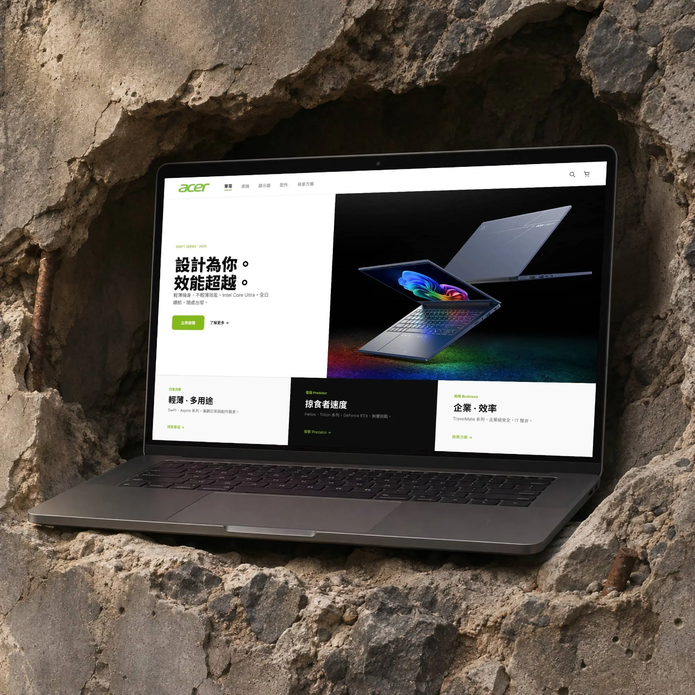

Acer 官網
Redesign
讓規格表成為主角。這不是一次讓 Acer 看起來更好看的 Redesign，而是重新以 PC 買家的真實決策方式來設計官網。

問題：
- Acer 官網將 Copilot+ PC、依用途、依系列和依特色並列為四個筆電瀏覽入口。同一款筆電可能同時出現在多個入口的商品列表中。對只知道自己要拿筆電做什麼、還沒鎖定型號的使用者來說，切換入口找候選機型時，得先辨認哪些型號已經看過，再比較新看到的選項。
- 官網沒有價格，需要跳到商城才看得到。
- 比較功能最多 3 台，且比較表常有空白欄位，這讓消費者很難獲取資訊做出是否要購買的判斷。
做法：把四個入口整合成「用途在前、系列在後」的單一入口；價格回到官網；比較改成浮出視窗，預設顯示七項主要規格（依問卷排序的六項，加上電池續航），並提供差異模式。
結果：以 Figma 原型與 HTML demo 進行 5 人非主持式測試，4 位認為比較功能有幫助；也發現處理器差異仍不好懂，列為後續改善方向。
背景與問題
概念性專案，與 Acer 官方無關。Product imagery and specifications © Acer Inc., used for conceptual purposes only.
幫家人買電腦時，我在 Acer 官網遇到幾個疑問：官網和商城是分開的，在官網看中一台，還要到商城重新找一次；官網的商品有規格卻沒有價錢。我接著瀏覽了 Apple、Microsoft Surface、Dell、Asus 的官網，發現要同時做到規格透明、視覺系統一致並不容易，所以決定以 Acer 做概念 Redesign。
我以 Nielsen 十大可用性原則檢視官網的選購流程，整理出三個問題：
- 價格不在官網，要跨站才能決定 筆電列表和比較頁都沒有價格，只有「購買」、「銷售據點」的按鈕連到商城。比較 3 台，就要開 3 次商城頁面，或自己搜尋型號。

筆電列表頁沒有價格，只有連到商城的按鈕


同一台機器在 acer.com 與 store.acer.com 各有一頁
- 從不同入口找筆電，會看到部分相同的機型 Acer 官網的「筆記型電腦」選單下有四個入口：Copilot+ PCs、依用途、依系列和依特色。以想找輕薄筆電的人來說，「輕薄筆電」和「極致輕薄｜Swift」看起來都可以點，但兩邊的機型有重疊。還沒鎖定型號的人切換入口時，得再確認哪些機型已經看過。
這四個入口都會帶到商城。我是從頁尾才找到官網自己的筆電列表，而列表上方又把「Copilot+ PC」「AI 電腦」這類技術標籤，和「電競」「專業使用者」這類使用情境或對象並排在一起。

頂層導覽同時存在系列、特色、用途、活動四種分類


不同入口的機型有重疊
- 想換一台比較，得回列表重找 官網一次最多可以比較三台筆電。開啟比較頁後，如果想換掉其中一台，就得回到產品列表重新找。比較表裡也有不少欄位留白，看不出是機型沒有這項功能，還是官網沒有提供資料。表格也沒有列出價格，想把價格和規格一起衡量時，得另外查。

比較表有空白欄位，也沒有價格
專案限制：獨立完成的概念專案，沒有 Acer 的真實流量與銷售數據，商品資料取自官網公開資訊。網站沒有上線，無法取得轉換率等實際成效，只能透過原型測試觀察使用者的反應。
使用者
Acer 官網把筆電分成商用、學生、日常家用、電競等用途。我以這個分類為基礎，再對照問卷前 6 題（過去的選購經驗），整理出三類使用者，並以測試任務對應的「商務攜帶」作為主要 persona。
- 學生 價格、重量、耐用性，以及續航，因為常要帶去學校用一整天
- 商務人士 價格、重量、功能，以及續航、保固與售後服務
- 遊戲玩家 功能、價格，以及顯示卡、螢幕更新率、散熱
主要 persona：要買工作用、方便攜帶筆電的上班族
- 想做的事 在預算內，挑一台輕、夠用的工作筆電
- 最在意 價格、儲存空間（5 位受訪者中各有 4 位選擇）
- 最猶豫的地方 價格，以及看不懂處理器或晶片版本的差異（各 2 位）
- 會去哪裡找資料 實體門市、官網、Google 交叉比對，官網只是其中一站
- 在 Acer 官網找筆電、比規格和查價格 同一款筆電可能出現在不同入口的商品列表裡，換個入口瀏覽時，容易看到剛剛看過的機型。找到幾台想比較的筆電後，一次最多能比三台，有些規格欄位還是空白。比較表也沒有價格，得逐台到商城查。
研究與發現
我以 Google 表單結合 Figma 原型進行問卷與非主持式測試，共 5 位受訪者。問卷分成兩部分：前 6 題了解過去的選購經驗，後 14 題請受訪者操作我的原型（結果見第 8 段）。前 6 題的發現：
- 5 位中有 4 位最在意價格，4 位在意儲存空間
- 最讓人猶豫的是價格，以及看不懂處理器、晶片版本的差異
- 買筆電前，使用者會到實體門市試用，也會透過 Google 搜尋，比對品牌官網與電商平台上的資訊。在 Acer 官網，規格可以集中在一張表比較，價格則要到商城逐台查。想判斷哪一台在預算內、規格又符合需求，就得自己把兩邊的資訊交叉比對。
競品比較（2026 年 11 月查證）
| 品牌 | 主要入口 | 官網看得到價格嗎 | 比較功能 |
|---|---|---|---|
| Apple | 系列（MacBook Neo、Air、Pro），名稱本身就說明用途 | 看得到，購買頁標示起價（例：MacBook Air NT$42,900 起），在官網直接購買 | 一次比 3 台，含價格 |
| ASUS | 用途在前（家用、商用、電競等），點進去再依系列分組，每個系列都附用途說明 | 看得到，列表直接顯示售價，也有價格篩選 | 最多 4 台 |
| Dell | 系列為主，另有「所有筆記型電腦／個人家用／學生」分頁 | 看得到，列表顯示起始價格，可直接購買；產品頁附「您適合哪一款處理器？」說明 | 有 |
| Microsoft Surface | 產品名稱（Surface Laptop、Surface Pro） | 看不到，購買導向 momo、PChome 等零售商 | 有「比較 Surface 型號」頁 |
| Acer（現況） | 四個平行入口 | 看不到，價格在商城 | 最多 3 台，表格常有空白 |
- 以系列為主入口的 Apple 和 Surface，產品線都很少；產品線多的 ASUS，採用「用途在前、系列在後」。
- 四個品牌中有三個（Apple、ASUS、Dell）在官網就看得到價格。
- Dell 在產品頁直接說明怎麼挑處理器，正好對應受訪者「看不懂處理器」的困擾。
設計決策
- 先依用途找筆電，再用系列篩選 Acer 原本把用途、系列、特色和 Copilot+ PC 並列為四個入口，同一台筆電可能出現在不同列表。對還沒鎖定機型的人來說，光是決定從哪個入口開始，就多了一步。
Apple 的 MacBook 只有 Air、Pro 和 Neo 三個系列，顧客可以先比較三者的定位，再決定要看哪個系列。Acer 和 ASUS 的筆電系列更多。如果顧客只知道自己要拿筆電做什麼，從系列開始找，就得先弄清楚哪些系列符合需求。
因此，我把用途設為 Acer 筆電的主要入口。顧客可以先依需求找到一批候選機型，熟悉 Acer 產品線的人也可以在同一份列表裡用系列篩選。
- 價格回到官網 列表、比較與產品頁都直接顯示價格，不用再跨站。
- 比較表做成浮出視窗 留在原頁面就能比較，不會失去原本的列表；並提供差異模式，可以清楚看到筆電規格的不同。
- 預設七項規格 比較視窗預設顯示價格、儲存空間、處理器、重量、記憶體、顯示器、電池續航。前六項依問卷三題（最在意的資訊、想比較的項目、產品頁最注意的資訊）的提及次數加總排序：價格 13、儲存空間 9、處理器 9、重量 6、記憶體 5、顯示器 5。電池續航被提到 4 次排第七，但對「方便攜帶」的主要使用者來說，能不能撐一整天是關鍵條件，所以一起放進預設。外觀被提到 7 次，但不是規格，所以不列入。
- 資訊架構 四套分類收斂為以「用途」為唯一頂層分類，系列與特色降級為篩選器；篩選條件從 13 組零件規格精簡為用途、價格、重量。
- 色彩語意 Acer Green 只代表「可行動」；品牌綠在白底對比僅 2.4:1，文字改用 green-700（4.96:1）通過 WCAG AA。
介面設計與設計系統
- 設計系統 token-based 三層架構（Primitive → Semantic → Component），Figma 樣式與 CSS 變數一對一對應（text/primary 即 --text-primary）。
- 響應式 篩選改為 bottom sheet、購買列移至拇指熱區、比較改為雙欄橫向滑動。

筆電列表頁 — Desktop 1440

Design Token 三層架構：Primitive → Semantic → Component


手機版三頁 — Mobile 375

規格不是附錄，是主文
元件與狀態

狀態總表 — 同一組元件，只切換變數模式

元件總表

比較列的狀態，截自可操作的 HTML Demo：已選 1 件時按鈕停用並提示「再選 1 台即可比較」，2 件以上才能開始比較

Semantic Token 對比驗證矩陣 — 20 組配對、兩種模式共 40 項檢查
深色模式


深色模式不用另外畫一套，切換變數模式就完成
手機版比較


手機版比較列與比較視窗
我把比較流程用到的元件整理成一套：主要與次要按鈕、卡片上的「比較」勾選、比較列的已選機型、差異模式開關、比較表儲存格、提示框、無結果畫面與載入中的骨架卡片。每個元件都有預設、hover、focus、按下、停用、載入等狀態；用不到的狀態也寫明原因，例如次要按鈕不送出資料，所以沒有載入狀態。
顏色分成兩層：底層是色票，上層是依用途命名的語意 token，例如 text/tertiary、compare/better-bg。元件只用語意 token，所以深色模式不用另外畫一套，切換變數模式就完成。每個 token 在淺色與深色模式下都先算過對比，20 組前景與背景配對、兩種模式共 40 項檢查，全部達到 WCAG 2.2 AA。
無障礙設計
我用自動檢查把 19 個畫面（含手機版與深色模式）共 794 段文字的對比掃過一遍，主要問題有五類：
- 主要按鈕 修改前 - 白字放在品牌綠 #83B81A 上只有 2.38:1。修改後 - 保留品牌綠，把文字改成黑色 #0D0D0D，對比提高到 8.18:1。
- 灰色文字 修改前 - 比較表的列標題 #888888 只有 3.54:1。修改後 - 改為 #6B6B6B，提高到 5.33:1。
- 差異模式開關 修改前 - 開啟時白色圓鈕在綠色軌道上只有 2.38:1，看不出是開還是關。修改後 - 軌道改成深綠 #4A7D15，提高到 4.96:1。
- 移除按鈕 修改前 - 比較列的「×」只有 1.99:1，點擊範圍也只有 10×20px。修改後 - 改成 5.06:1、24×24px。
- 星等 原本手機版只用金色星星呈現評分，星星與背景的對比度只有 2.11:1。我補上數字評分，若使用者看不清星星，也能藉由分數去做比較。

對比修正 Before／After

無障礙驅動的色彩變體
修正時我直接調整語意 token，所有畫面同時更新，深色模式也一起成立。修正後這 794 段文字全部達到 AA（壓在產品照片上的文字不在這次檢查範圍）。
設計稿修正後，我也把同樣的修正做進 HTML demo，再用 axe 與 Lighthouse 檢查實際網頁：修正前列表頁有 1 項 axe 違規（55 個元素），Lighthouse 無障礙 97 分；修正後首頁、列表頁與產品詳細頁皆為 0 違規、100 分，並在 320、375、768、1440px 四種寬度都能正常顯示。

比較視窗的無障礙標註（桌機）— 焦點順序、語意、對比

比較列與卡片的無障礙標註（含手機版）— 焦點順序、語意、點擊範圍
我在交接稿上標出比較列和比較視窗的 Tab 順序。使用者按下「開始比較」後，焦點會移到視窗內的「關閉」按鈕。視窗開啟期間，按 Tab 只會在視窗內切換。按 Esc 關閉後，焦點會回到原本的「開始比較」按鈕。手機版的比較表可以左右捲動，這個區域也能用鍵盤操作。
在差異模式中，我用底色、粗體和勾號標出表現較好的數值，讓使用者即使分不清底色，也能辨認差異。交接稿也標註了標題層級、表格的欄標題與列標題，以及差異模式開關的 role="switch"，供工程師實作。
互動與原型
- 比較功能做成就地開啟的 overlay：勾選 2–4 台後底部浮出比較列，表格只保留重量、記憶體、顯示器、處理器、儲存、售價六項，並標示較優值；關閉後回到原位置。
- 產品詳細頁的 Sticky Buy Bar 跟隨捲動，同一網域完成購買。
可操作的 HTML Demo
可直接在上方操作；畫面較小時建議另開分頁檢視

勾選 2–4 台後，底部浮出比較列

Compare Overlay — 差異模式只留下不一樣的那幾列

產品詳細頁的 Sticky Buy Bar 跟隨捲動
驗證與成果
問卷後 14 題請受訪者在原型中完成「找兩台工作用、方便攜帶的筆電並比較」等任務：
- 5 位中有 4 位在找筆電時沒有卡住，1 位表示「有一點」
- 4 位認為比較功能有幫助，1 位覺得普通；有受訪者提到，處理器型號不同時，新手無從判斷優劣
- 5 位在產品頁最注意的資訊都包含價格
- 2 位提到文字太小、無法放大，看起來很吃力
- 有受訪者建議「篩選欄位直接加入主要用途」
反思
做完後學到什麼
我原本以為，把重要規格放在一起比較，就能讓使用者更容易選擇。但受訪者看不懂處理器差異，這讓我發現，資訊更容易找到，不代表更容易理解。比較介面還需要幫助使用者把規格連結到自己的使用需求。
這次原型只完成部分頁面，也限制了測試能回答的問題。我能觀察局部操作是否順暢，但還無法確認使用者從篩選、比較到選定產品，是否都能順利完成。
如果重做會改什麼
我會先用低保真原型串起一條完整的選購流程，提早測試，再細化視覺與互動。處理器資訊則會保留完整型號，搭配經查證的用途說明，協助不熟悉規格的人理解差異。
測試時，除了觀察是否完成操作，我也會請受測者說明「為什麼選這台、它如何符合你的需求」，確認介面是否真正幫助他們做出判斷。另外，測試後我依主要使用者的攜帶需求，把電池續航補進比較視窗的預設規格，下一輪測試會確認七項是否過多。